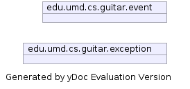
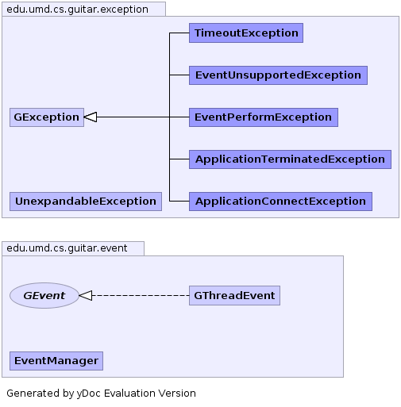

|
|||||||||
| PREV NEXT | FRAMES NO FRAMES | ||||||||
| Packages | |
|---|---|
| edu.umd.cs.guitar.event | Package for events supported by GUITAR. |
| edu.umd.cs.guitar.exception | Package for GUITAR exceptions. |
| edu.umd.cs.guitar.model | Package for GUITAR data model. |
| edu.umd.cs.guitar.model.data | |
| edu.umd.cs.guitar.model.wrapper | |
| edu.umd.cs.guitar.util | Package for utilities shared between GUITAR components. |


|
|||||||||
| PREV NEXT | FRAMES NO FRAMES | ||||||||